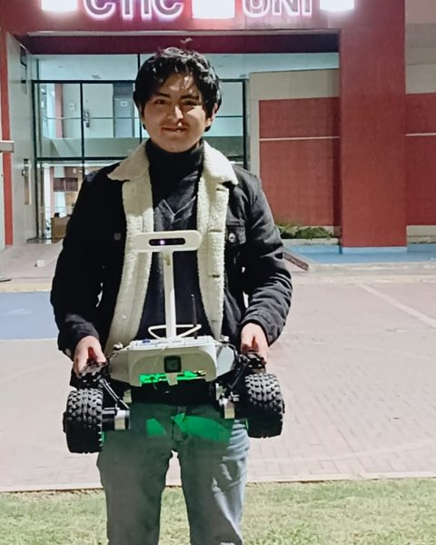

ROS 2 Robotics Engineer · Peru · Open to remote
I build autonomous mobile robots, from simulation to the real world.
Mechatronics engineer with 5+ years developing robotics software on ROS 1 and ROS 2: navigation with Nav2, behavior trees, SLAM, perception and Gazebo simulation — for logistics, agriculture and construction robots. Founder of Kalman Robotics.

- 5+years with ROS 1 & ROS 2
- 5robot projects, sim to real
- 2,000+engineering students trained
- 1stInternational Startup Competition
Projects
Robots I've built
Short loops of each robot — open a project for the architecture, full video and code.
Experience
Where I've worked
-
2024 — Present
Founder & CEO · Kalman Robotics (formerly RoboSkills)
- Designed the ROS 2 software stack of the Kalman educational robot kit: bringup, URDF, Gazebo simulation, custom interfaces, IMU, telemetry and teleoperation.
- Leading Kalman Lab, a browser-based ROS 2 lab: one Docker container per student with VS Code, terminal and a remote desktop running Gazebo and RViz.
- Built Gazebo simulations of mobile robots (Kalman Nexus, TortoiseBot) and produced video courses on ROS 2, Linux, URDF and CMake.
- Technical advisor on robotics theses (AgroBot, UV disinfection robot) and on LeonardoBot for Smart Painter.
-
Mar 2023 — Oct 2023
Head of Robotics Development · Plural Soft
- Led development of a forklift-type autonomous mobile robot prototype for warehouse logistics.
- Robot software in ROS 2 (Galactic), validated in Gazebo and integrated with the hardware.
-
Jan 2021 — Feb 2023
Head of Robotics Development & Innovation · Ruway Tec
- Autonomous navigation for Leo Rover and MecanumBot platforms in ROS 1 and ROS 2, with Gazebo simulation.
- Industry 4.0 projects for mining: laser drilling-pattern projector (patent pending), biometric system, haul-truck tracking software.
Skills
What I work with
ROS & autonomy
Simulation
Perception & estimation
Software & DevOps
Embedded & hardware
Education & certifications
B.Sc. Mechatronics Engineering — UNI, Peru (2022)
Robotics Developer Masterclass — The Construct (2024)
Instructor, ROS programs — OTI UNI (2025)
Let's build something that moves.
Open to remote ROS 2 / robotics software roles and collaborations.